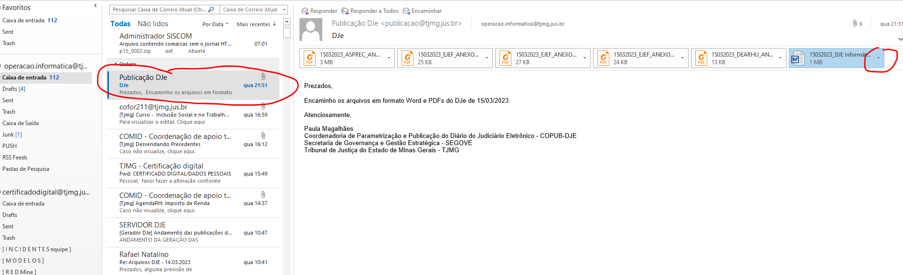
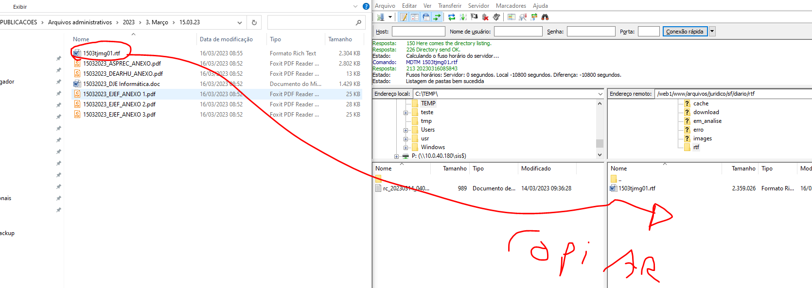
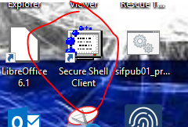
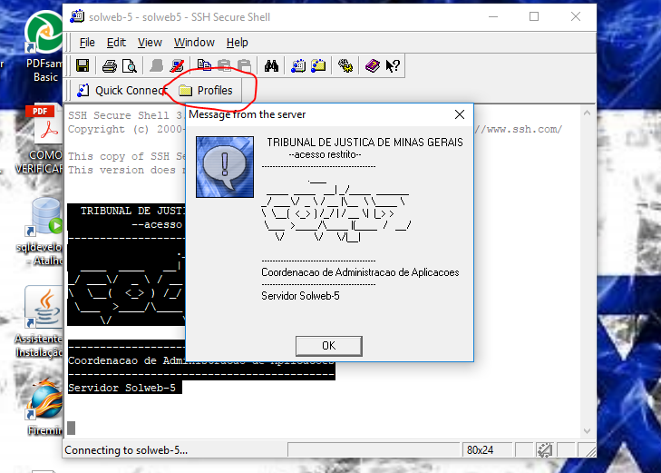
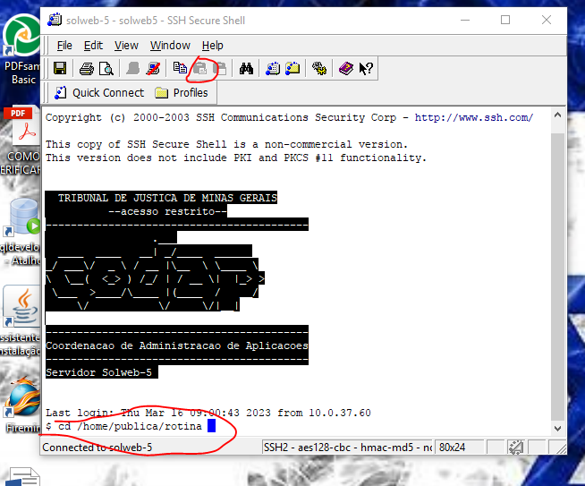
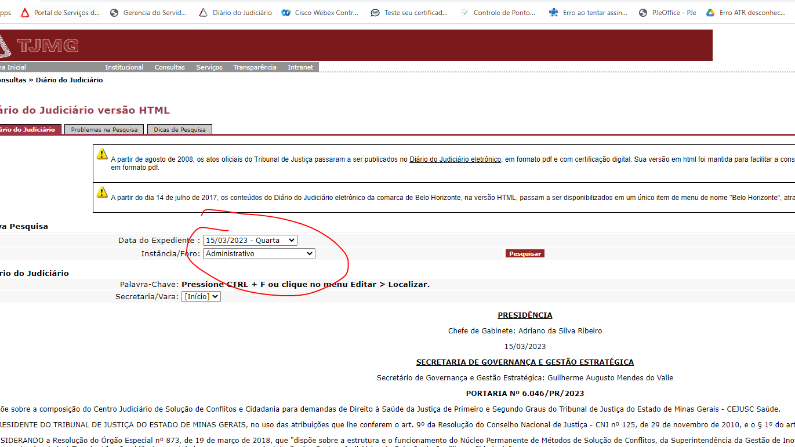

ABRIR E-MAIL OPERAÇÃO.
PROCURAR E-MAIL DO DIA DO EXPEDINTE (procurar e-mail do dia anterior).
CLICAR NA SETA DO ÚLTIMO ARQUIVO E SALVAR TODOS ARQUIVOS NA PASTA (CRIAR A PASTA DO EXPEDIENTE) Z:\Arquivos PUBLICACOES\Arquivos administrativos\2023\5. Maio\03.05.23.
OBS.: SE O E-MAIL PUBLICAÇÃO Dje não aparecer enviar mensagem para Paula ou Michele da presidência.
ENTRAR NA PASTA: Z:\Arquivos PUBLICACOES\Arquivos administrativos\2023\3.Março\15.03.23
Abrir o arquivo do word no libre office
Ir em arquivo salvar como e salvar com o nome diamestjmg01 (DIA E MÊS DO EXPEDIENTE)
Em tipo salvar como RTF e Feche o documento
Abrir filezila
Ir em SITE TJ_Arquivos RTF (NA SETINHA)
Ir ao endereço:/web1/www/arquivos/juridico/sf/diario
E procurar a pasta rtf
Acessar SOLWEB-5
CLICAR EM PROFILES E DEPOIS EM SOLWEB-5
SENHA:imprensa
Colar o comando abaixo:
cd /home/publica/rotina
Colar o outro comando:
./rtf2html.pl –t
AGUARDE RODAR O COMANDO ATÉ APARCER NO FINAL O CIFRÃO
Após o enter o arquivo vai sumir do zila (F5 NO ZILA PARA ATUALIZAR)
Ir no site dje e verificar se criou
No zila abrir pasta do dia do expediente e procurar o arquivo diamestjmg01.txt e copiá-lo para z:\Arquivos PUBLICACOES\Arquivos administrativos\2023\3. Março\15.03.23 (dentro do zila)